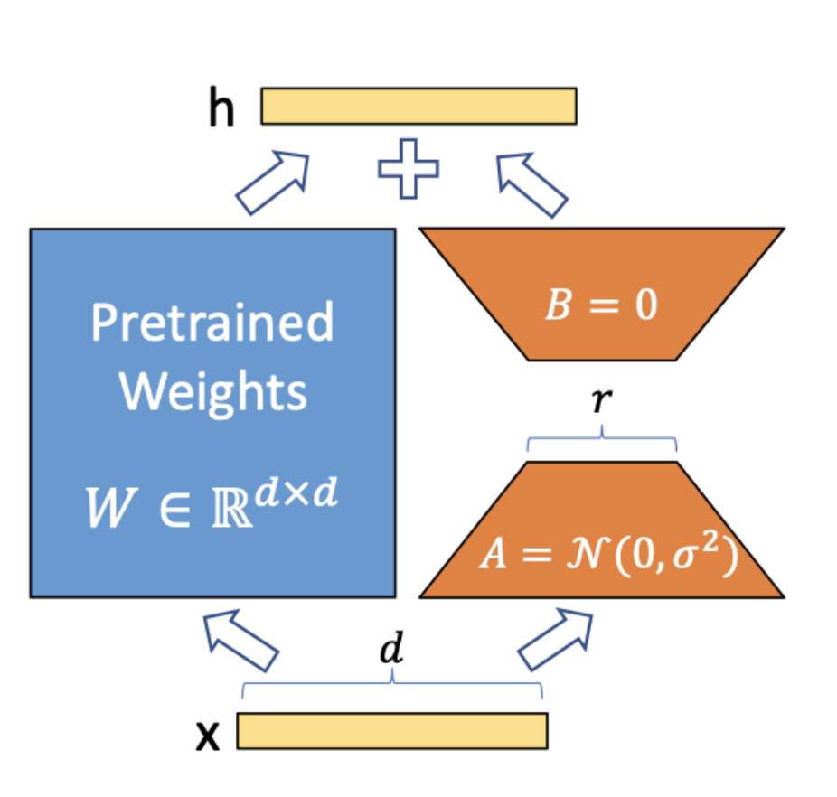

LORA微调
LORA微调
随着大规模预训练模型不断增大，模型微调的资源需求和部署复杂度也急剧提升。 LoRA（Low-Rank Adaptation）作为近年来高效微调的代表方案，因其在显存占用、训练效率和部署便捷性之间取得了平衡，迅速成为大模型微调的首选。
背景与挑战
在 LoRA 出现之前，微调大模型通常依赖全参数微调或 Adapter 方案。
-
全参数微调虽然效果最佳，但显存需求极高，训练门槛较高；
-
Adapter 微调减少了训练参数，但会带来推理延迟和部署复杂度。
-
因此，研究者亟需一种既节省资源又能保证性能，且方便推理部署的微调方法。
-
LoRA 正是在这样的背景下诞生，目标明确：
-
显著降低训练时的显存与计算成本；
-
保持接近全参数微调的性能水平；
-
实现推理时无额外计算负担，方便快速部署。
LoRA 的核心思想
Transformer 模型中，绝大部分计算来自于大规模权重矩阵与输入的乘法运算。直接微调这些庞大矩阵参数，意味着巨大的计算和显存开销。
LoRA 通过对权重更新做低秩分解，实现参数的高效表达。

具体而言，假设原权重矩阵为 W ，LoRA 并不直接更新 W，而是引入两个小矩阵 A 和 B，使得权重的增量更新满足 ΔW = B @ A。若 W 将 d 维输入映射到 k 维输出，则 A 的形状为 (r, d)，B 的形状为 (k, r)：
其中秩 r ≪ min(d, k)。训练过程中，仅优化这两个低秩矩阵参数，保持 W 不变，从而大幅减少可训练参数数量和计算资源。
LoRA 训练详细步骤
1.冻结预训练模型参数
传统微调需调整整个 Transformer 权重，而 LoRA 只冻结原模型参数，避免全量反向传播开销。
for param in model.parameters():
param.requires_grad = False # 冻结所有参数
这样可以显著降低训练计算和显存需求。
2.替换 Transformer 注意力层的全连接层 Transformer 中，查询（Q）、键（K）、值（V）计算通常通过线性层实现：
Q = XWQ , K = XWK , V = XWV LoRA 不直接训练原始权重 WQ ，而是对其增量进行低秩分解：
ΔW_Q = B_Q @ A_Q
其中：
-
A_Q的形状为(r, d)； -
B_Q的形状为(d, r)； -
r ≪ d ，大幅减少训练参数。
下面按 PyTorch 的 nn.Linear 约定实现：A.weight 的形状是 (rank, in_features)，B.weight 的形状是 (out_features, rank)。因此合并到线性层权重时使用 B.weight @ A.weight。
代码示例：
import torch
from torch import nn
class LoRALinear(nn.Module):
def __init__(self, in_features, out_features, rank=4, alpha=32):
super().__init__()
if rank <= 0:
raise ValueError("rank must be positive")
self.rank = rank
self.scaling = alpha / rank
self.W = nn.Linear(in_features, out_features, bias=False)
self.W.requires_grad_(False) # 冻结原始权重
# nn.Linear.weight 的形状分别是 (rank, in_features) 和 (out_features, rank)
self.A = nn.Linear(in_features, rank, bias=False)
self.B = nn.Linear(rank, out_features, bias=False)
nn.init.kaiming_uniform_(self.A.weight, a=5**0.5)
nn.init.zeros_(self.B.weight) # 零初始化，使初始输出不偏离原模型
def forward(self, x):
return self.W(x) + self.scaling * self.B(self.A(x))
3.只训练低秩矩阵参数
optimizer = torch.optim.AdamW([
{'params': model.A.parameters()},
{'params': model.B.parameters()}
], lr=1e-4)
仅训练 A 和 B ，冻结原模型所有参数，显著降低计算量。
4.训练完成后权重合并
训练完成后，可将增量权重（包含缩放系数）直接加到原始权重：
W'_Q = W_Q + (alpha / rank) * (B_Q @ A_Q)
合并优势：
-
推理时无额外计算开销；
-
轻松部署，无需保留额外参数结构。
5.推理阶段选择
-
保持 LoRA 结构：适合多任务动态切换，节省存储；
-
合并权重：适合单一任务高效推理，避免额外计算。
with torch.no_grad():
model.W.weight.add_(model.scaling * (model.B.weight @ model.A.weight))
其中需要注意的实现细节如下：
-
- 低秩秩大小 r 选择：r通常在 4 到 64 之间，根据任务复杂度与资源限制调整。秩越小，资源消耗越少，但性能可能略降。
-
- 更新部位：LoRA 通常作用于 Transformer 中关键线性层（如自注意力的 Query、Key、Value 投影矩阵），保证微调效果最大化。
-
- 训练策略：初始化时，矩阵 B通常初始化为零，保证初始模型表现不变；A 初始化为小随机值。训练时仅更新 A、B，其他参数冻结。
-
- 推理阶段：微调后，可以将 A B 直接合并进 W，推理时无额外计算开销，实现高效部署。
LoRA 在 Transformer 中的作用位置
LoRA 主要作用于 Multi-Head Attention 的查询（Q）、键（K）、值（V）线性层，是微调最关键的参数部分。
LoRA 训练示例代码
import torch
import torch.nn as nn
import torch.optim as optim
class LoRAModel(nn.Module):
def __init__(self, d, r=4, alpha=32):
super().__init__()
self.W = nn.Linear(d, d, bias=False)
self.W.requires_grad_(False)
self.A = nn.Linear(d, r, bias=False)
self.B = nn.Linear(r, d, bias=False)
nn.init.kaiming_uniform_(self.A.weight, a=5**0.5)
nn.init.zeros_(self.B.weight)
self.scaling = alpha / r
def forward(self, x):
return self.W(x) + self.scaling * self.B(self.A(x))
model = LoRAModel(d=512, r=4).cuda()
optimizer = optim.AdamW([
{'params': model.A.parameters()},
{'params': model.B.parameters()}
], lr=1e-4)
for epoch in range(10):
x = torch.randn(32, 512).cuda()
y = model(x).sum()
y.backward()
optimizer.step()
optimizer.zero_grad()
print(f"Epoch {epoch}: Loss={y.item()}")
发展与变体
自 2021 年 LoRA 提出后，技术不断演进，形成多种变体：
- QLoRA
结合 4-bit 量化，极大压缩模型大小与显存需求，实现大模型微调的低资源化；
- AdaLoRA
动态调整不同层的低秩大小，提高训练灵活性和性能；
- PEFT 框架
在 Hugging Face PEFT 中标准化接口，实现 LoRA 快速集成和使用。
LoRA 与传统微调对比
| 对比项 | 传统微调（Full Fine- Tuning） |
LoRA 微调 |
|---|---|---|
| 参数更新 | 全部权重 | 仅低秩矩阵 A 和 B |
| 训练开销 | 高（数十亿参数） | 低（百万参数级别） |
| 存储需求 | 大 | 小 |
| 推理效率 | 可能受影响 | 几乎无额外负担 |
LoRA 特别适合：
-
大规模 Transformer 微调（如 GPT、LLaMA、ViT）；
-
多任务模型快速切换与存储优化；
-
算力受限环境，如移动端和边缘计算。
总结一下，LoRA 通过对 Transformer 注意力层权重增量进行低秩分解，有效减少训练参数量和计算资源消耗。其采用冻结大模型参数，仅训练低秩矩阵，降低存储和计算开销。
并且LORA支持大语言模型和视觉 Transformer 的高效微调，可以兼顾多任务和快速推理。